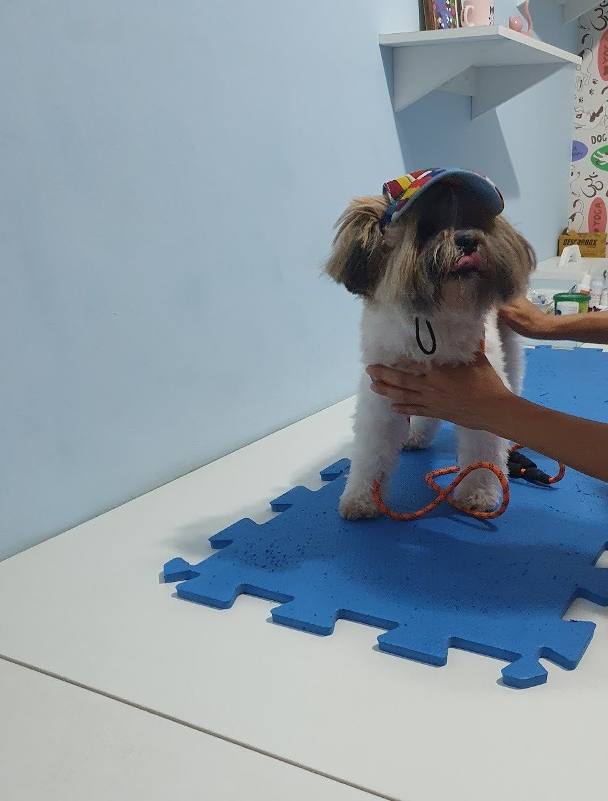

Início · Atendimento · Consultas e check-up
Consultas e check-up: com calma, para cães e gatos.
A consulta é o centro do atendimento da My Pet Zen. Esta página mostra como uma consulta veterinária costuma se organizar. A conduta é definida na consulta, depois do exame do animal.
Passo a passo
Como é a consulta
- ConversaO que trouxe vocês, a rotina, a alimentação, as vacinas e o que mudou nos últimos dias.
- Exame físicoPeso, pele e pelos, olhos, ouvidos, boca, coração e pulmões, abdome.
- ExplicaçãoO que foi visto, o que pode estar acontecendo e o que ainda precisa ser investigado.
- PlanoTratamento, exames ou retorno, com as orientações combinadas com o tutor.

“ficamos extremamente confortáveis com a Dra Érica, de uma empatia e acolhimento sem igual.”Tâmara P., avaliação no Google · ver na ficha
Rotina
O check-up
O check-up é a consulta de quando está tudo bem. É nele que mudanças pequenas — de peso, de dentes, de pele — costumam ser percebidas cedo.
A frequência depende da idade, da espécie e da saúde do animal; a veterinária orienta.
Voltar à mesma veterinária ajuda a comparar: o peso de hoje com o do ano passado, o comportamento de antes e o de agora.
Filhote, adulto, idoso
Por fase da vida
Filhote
Primeira consulta, plano de vacinas e vermifugação, alimentação e socialização.
Adulto
Peso, dentes, pele, prevenção e a conversa sobre castração.
Idoso
Consultas mais próximas e exames de acompanhamento, quando indicados.
Cão ou gato
Cada espécie tem as suas particularidades — e cada animal, o seu jeito.
“Minha cachorrinha é acompanhada pela Dra. Érica desde filhote… A Dra. é extremamente atenciosa, amorosa e dedicada”Shirley F., avaliação no Google · ver na ficha
Preparo
O que levar
- Carteira de vacinação.
- Exames e receitas anteriores, se tiver.
- O nome da ração e dos remédios que ele usa.
- Fotos ou vídeos do que preocupa você (tosse, coceira, um jeito diferente de andar).
- Gatos: na caixa de transporte. Cães: na guia, com coleira firme.
Pergunte ao agendar: alguns exames pedem jejum, outros não. Não suspenda remédios sem orientação.
Atenção
Sinais que não esperam
Alguns sinais pedem atendimento no mesmo dia. Avise pelo WhatsApp; fora do horário do consultório, procure um serviço veterinário de plantão.
- Dificuldade para respirar.
- Gato que tenta urinar e não consegue.
- Vômitos repetidos, prostração ou recusa de comida e água.
- Suspeita de envenenamento, queda ou atropelamento.
Dúvidas frequentes
Perguntas comuns
Preciso agendar?
Sim. O agendamento é pelo WhatsApp da My Pet Zen, (71) 98739-0603.
Posso levar dois animais no mesmo horário?
Pergunte ao agendar, para reservar o tempo de cada um.
A consulta já inclui exames?
Não necessariamente. Se algum exame fizer sentido, a Dra. Érica explica qual, por quê e onde fazer.
Com hora marcada
Agende o atendimento do seu cão ou do seu gato.
R. Silveira Martins, 1016, Narandiba (Cabula). Segunda a sexta, das 8h às 17h; sábado, das 8h às 12h. O agendamento é pelo WhatsApp (71) 98739-0603.